--moves # - How many turns to allow before quitting.--hero [id] - Use the actor with the given id for the heroes.--enemy [id] - Use the actor with the given id for the enemies.--eatable [id] - Use the actor with the given id for the eatables.--powerup [id] - Use the actor with the given id for the powerups.--delay-[type] # - Let actors of the given type only make moves every # turns.--delay # - Make every move last # clock cycles.--render-off- Do not render the map, or make timed delays. Useful if you want to use printf for debugging.--disable-enemies - Do not populate the map with enemies. Useful for testing simplehero.--goal [id] - Change the grading criteria for the actor id to grade. (Currently works only for simplehero. Will update.)
./ssbros maps/basic.txt --hero simplehero --delay-powerup 2
./ssbros maps/jetsons.txt --hero simplehero --delay-powerup 2
./ssbros maps/stronglyconnected.txt --hero simplehero
./ssbros maps/pacman.txt --hero smarthero --enemy random --delay-enemy 4
./ssbros maps/lastresort.txt --hero smarthero --enemy pursuer --delay-enemy 4
./ssbros maps/tunnels.txt --hero smarthero --delay-enemy 3
./ssbros maps/pacman.txt --enemy smartenemy --eatable random --delay-eatable 4 --hero simplehero
./ssbros maps/stoleebros.txt --enemy smartenemy --eatable random --delay-eatable 2 --hero simplehero
./ssbros maps/tunnels.txt --enemy smartenemy --eatable random --delay-eatable 1 --delay-enemy 2 --delay-hero 4 --hero smarthero
./ssbros maps/pacman.txt --hero simplehero --powerup smartpowerup --enemy random --delay-enemy 3 --delay-hero 3
./ssbros maps/pacman.txt --hero smarthero --powerup smartpowerup --enemy pursuer --delay-enemy 3 --delay-hero 3
./ssbros maps/pacman.txt --hero smarthero --powerup smartpowerup --enemy pursuer --delay-enemy 2 --delay-hero 2
./ssbros maps/pacman.txt --hero random --enemy actor --powerup pursuer --eatable pursuer --delay-hero 2
GameManager will manage this based on the command-line arguments.
The first line should contain a word and then a width and height.
If the word is "TORUS", then the map will "wrap-around".
After this, the map is given by reading all non-newline characters (hopefully split into lines for each row of the map)
Here are the character meanings:
' ' (Space) - An open position. Allows actors to stay here, or move in each of the cardinal directions (unless blocked by #).# - A wall. Actors cannot move here.* - An "eatable", something that should be eaten by a hero.P - A "powerup", Currently doesn't do anything special, but can be controlled by a different actor than an eatable.e - An "enemy" spawn point. There will be an enemy actor placed here for each one.h - A "hero" spawn point. There will be a hero actor placed here for each one.> < v ^ - Treadmills: Actors entering these positions can only move in the direction the treadmill is pointing.0-F (A hexadecimal digit) - When two positions are marked with the same hexadecimal digit, then a "teleporter" is created between these positions.GraphMap.
simplehero.
Those with enemies can be used to test smarthero, smartenemy, smartpowerup.
| 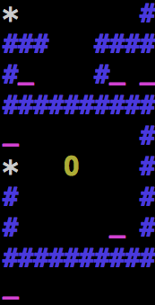 | 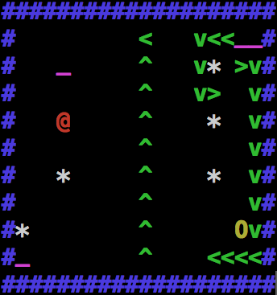 | 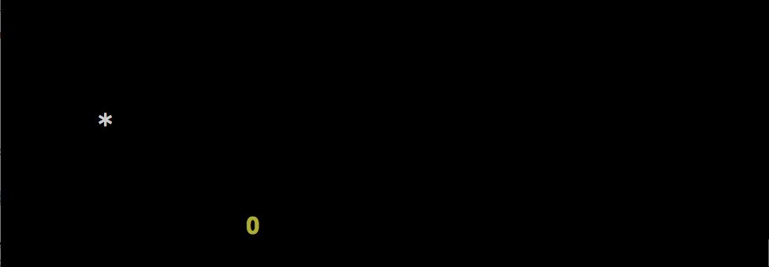 | 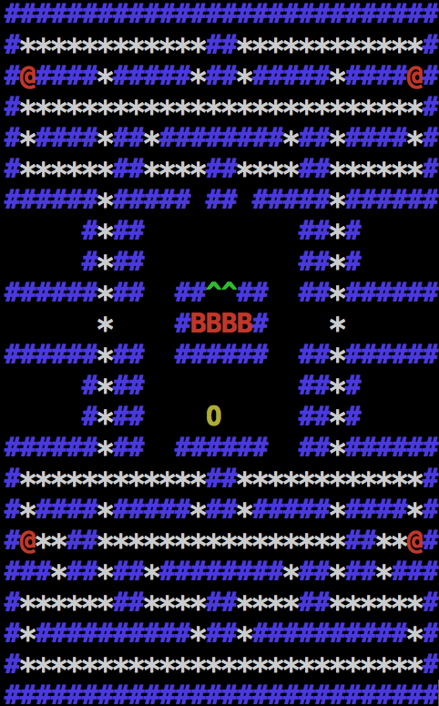 |
| basic.txt | jetsons.txt | open.txt | pacman.txt |
| Easy | Medium | Easy | Medium |
| 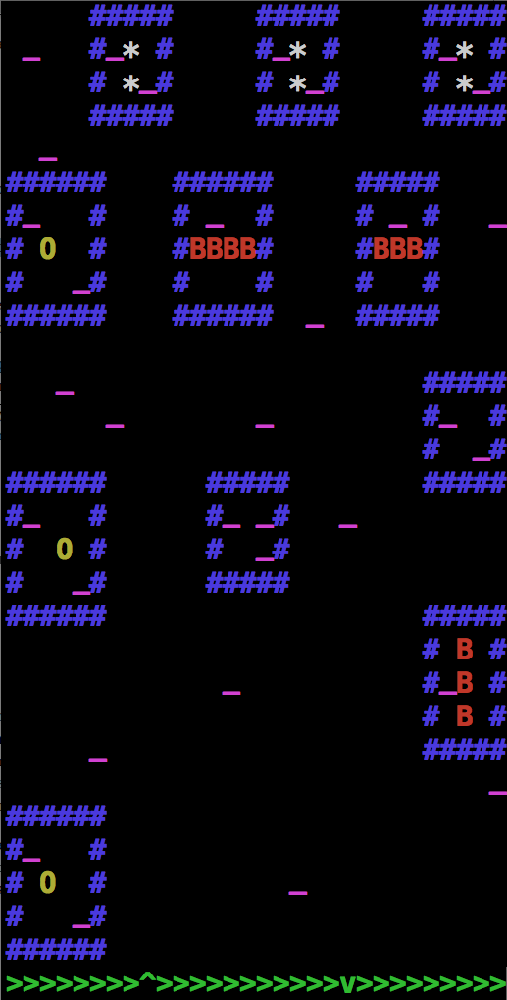 | 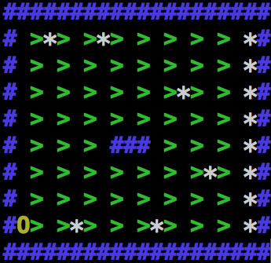 | 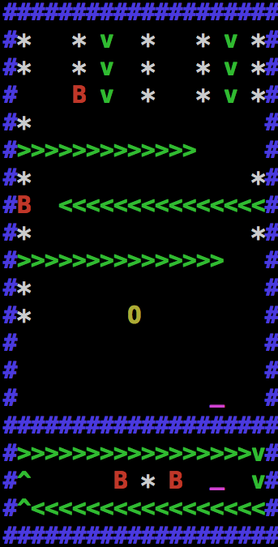 | 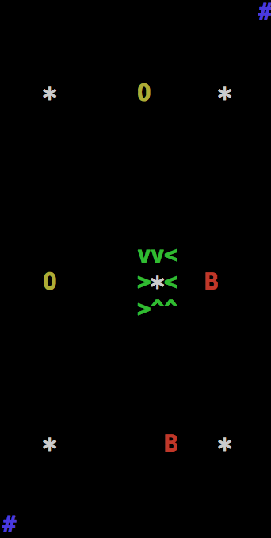 |
| stoleebros.txt | stronglyconnected.txt | tunnels.txt | lastresort.txt |
| Medium | Hard | Hard | Hard |
| 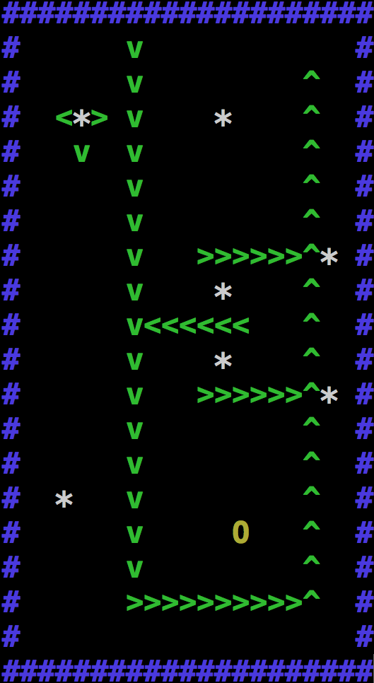 | 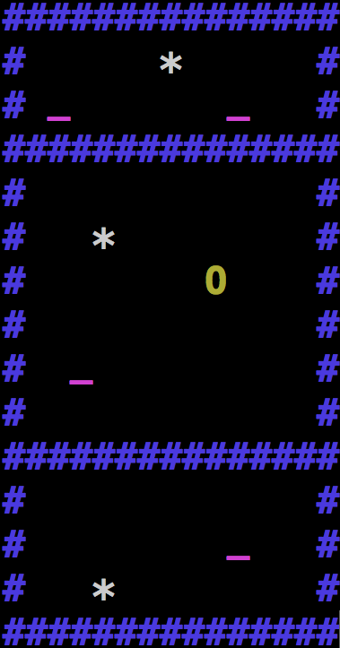 | 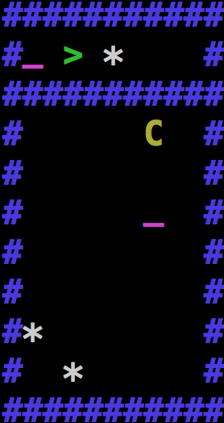 | 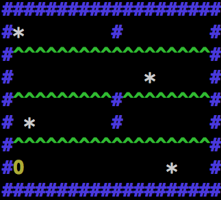 |
| treadmills_test.txt | teleporters.txt | test_for_smart_path.txt | stronglyconnected2.txt |
| Easy | Easy | Hard | Hard |
int specifying its type.
This is given as a bitmask using the following identifiers:
ACTOR_HERO -- If type & ACTOR_HERO is not 0, then this actor is a hero.ACTOR_ENEMY -- If type & ACTOR_ENEMY is not 0, then this actor is an enemy.ACTOR_EATABLE -- If type & ACTOR_EATABLE is not 0, then this actor is an eatable.ACTOR_POWERUP -- If type & ACTOR_POWERUP is not 0, then this actor is a powerup.ACTOR_DEAD -- If type & ACTOR_DEAD is not 0, then this actor has been removed from the game. (It also has position (-1,-1).)ACTOR_POWERUP and the ACTOR_EATABLE powerups.
ncurses to create the game map.
This will cause problems with any writing to standard out if you are rendering the game board.
You can use the --render-off command-line argument to turn off the rendering and then you can use printf as much as you want.
#include <ncurses.h> and use the line
waddstr(stdscr, "This is a message!\n");--delay 1000000) to slow the game.